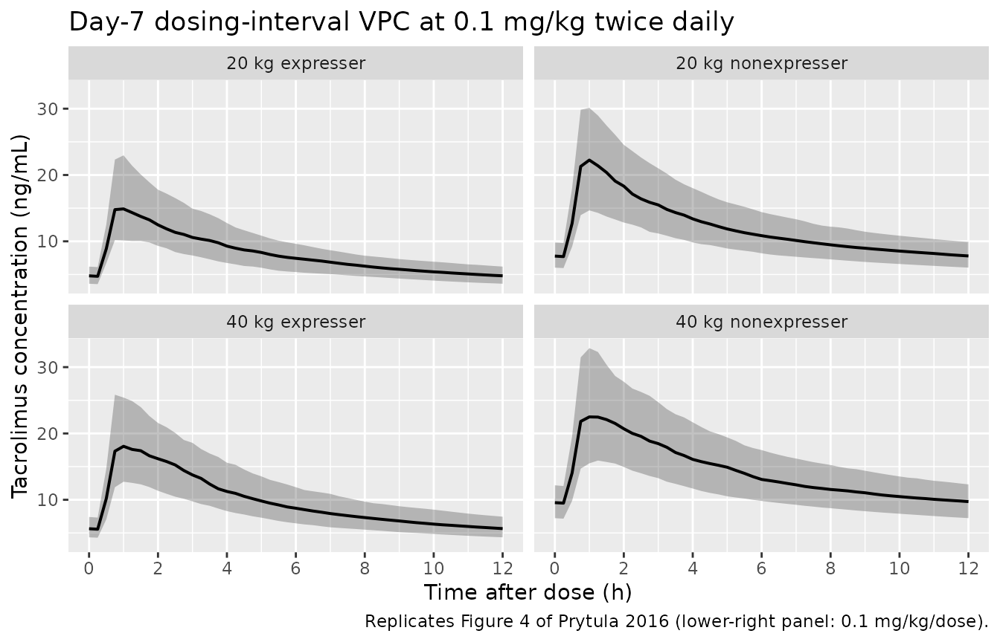

Tacrolimus (Prytula 2016)
Source:vignettes/articles/Prytula_2016_tacrolimus.Rmd
Prytula_2016_tacrolimus.RmdModel and source
- Citation: Prytula AA, Cransberg K, Bouts AHM, van Schaik RHN, de Jong H, de Wildt SN, Mathot RAA. The Effect of Weight and CYP3A5 Genotype on the Population Pharmacokinetics of Tacrolimus in Stable Paediatric Renal Transplant Recipients. Clin Pharmacokinet. 2016;55(9):1129-1143. doi:10.1007/s40262-016-0390-7
- Description: Two-compartment population PK model with first-order absorption and a fixed absorption lag time for twice-daily oral tacrolimus (Prograft) in stable paediatric renal transplant recipients at least one year after kidney transplantation (Prytula 2016). All apparent-PK parameters (CL/F, Q/F, V1/F, V2/F, ka) scale allometrically with body weight at fixed exponents (0.75 on CL/F and Q/F, 1 on V1/F and V2/F, -0.25 on ka) referenced to a 70 kg adult; V2/F is fixed at 1090 L/70 kg during covariate analysis; CL/F additionally varies with CYP3A51 carrier status (1+0.45-fold higher in carriers vs 3/3 nonexpressers), gamma-glutamyltransferase (power -0.21, centred at 13 U/L), and haematocrit (power -0.59, centred at 0.34); eta_Q is perfectly correlated with eta_CL and is constructed as iiv_q_scale etalcl (iiv_q_scale = 2.0; the ‘IIV-CL-Q’ parameter in Table 2); inter-individual variability is a 3x3 correlated block on (ka, CL/F, V1/F); proportional residual error.
- Article: https://doi.org/10.1007/s40262-016-0390-7
Population
The model was developed from 120 abbreviated 2-h or 4-h pharmacokinetic profiles obtained from 54 stable paediatric kidney transplant recipients at the Erasmus MC-Sophia Children’s Hospital in Rotterdam (n = 45) and Emma Children’s Hospital in Amsterdam (n = 9), both in the Netherlands (Prytula 2016 Table 1). Median age was 11.1 years (range 3.8-18.4); median body weight 38.6 kg (range 15-86); 48% of subjects were female; and 70% were recorded as Caucasian. All patients were beyond the first year after kidney transplantation (median 16.2 months posttransplant) on twice-daily oral tacrolimus (Prograft), with the dose unchanged for at least 14 days at baseline and titrated by therapeutic drug monitoring to a posttransplant year >=1 target trough (C0) of 4-8 ug/L. CYP3A5 6986A>G (rs776746) genotype was determined in 49 of 54 patients (Table 1): 1/1 n = 1 (2%), 1/3 n = 12 (24.5%), 3/3 n = 36 (73.5%); 5 patients had no DNA available and the source paper estimated a separate CL/F shift for them (h(CYP3A5 missing) = 0.41 with 61% SE) that is not encoded here. Tacrolimus was measured in whole blood by LC-MS/MS (83% of samples) or MEIA, with the assay-method covariate tested but not retained.
The same information is available programmatically via
readModelDb("Prytula_2016_tacrolimus")$population.
Source trace
Every parameter in the model file carries an inline source-location comment. The table below collects the entries in one place.
| Equation / parameter | Value | Source location |
|---|---|---|
lka (ka at 70 kg) |
0.23 1/h | Table 2, Estimated typical value, ka row |
ltlag (lag time) |
0.47 h | Table 2, Estimated typical value, tlag row |
lcl (CL/F at WT 70 kg, 3/3, gGT 13, HCT
0.34) |
35 L/h | Table 2, Estimated typical value, CL/F (CYP3A5 3/3) row |
lvc (V1/F at 70 kg) |
12 L | Table 2, Estimated typical value, V1/F row |
lq (Q/F at 70 kg) |
68 L/h | Table 2, Estimated typical value, Q/F row |
lvp (V2/F at 70 kg; fixed) |
1090 L | Table 2, Estimated typical value, V2/F row (FIX) |
e_cyp3a5_expr_cl (CYP3A5*1 carrier shift) |
0.45 | Table 2, h(CYP3A5 1/1, 1/3) row |
e_ggt_cl (gGT power exponent) |
-0.21 | Table 2, h(gGT) row |
e_hct_cl (HCT power exponent) |
-0.59 | Table 2, h(Ht) row |
e_wt_cl (allometric WT on CL/F; fixed) |
0.75 | Section 3.2.1, allometric scaling paragraph |
e_wt_q (allometric WT on Q/F; fixed) |
0.75 | Section 3.2.1, allometric scaling paragraph |
e_wt_vc (allometric WT on V1/F; fixed) |
1 | Section 3.2.1, allometric scaling paragraph |
e_wt_vp (allometric WT on V2/F; fixed) |
1 | Section 3.2.1, allometric scaling paragraph |
e_wt_ka (allometric WT on ka; fixed) |
-0.25 | Section 3.2.1, allometric scaling paragraph |
q_eta_scale (IIV-CL-Q scaling) |
2.0 | Table 2, IIV-CL-Q row |
| IIV ka (omega^2 = log(1 + 0.58^2)) | 58% CV | Table 2, Inter-individual variability ka row |
| IIV CL/F (omega^2 = log(1 + 0.45^2)) | 45% CV | Table 2, Inter-individual variability CL/F row |
| IIV V1/F (omega^2 = log(1 + 1.70^2)) | 170% CV | Table 2, Inter-individual variability V1/F row |
| Correlation eta_ka . eta_CL | 0.11 | Table 2 footnote (rho_{ka.CL}) |
| Correlation eta_ka . eta_V1 | 0.19 | Table 2 footnote (rho_{ka.V1}) |
| Correlation eta_CL . eta_V1 | 0.38 | Table 2 footnote (rho_{CL.V1}) |
| Proportional residual error | 21% | Table 2, Residual variability proportional row |
| CL/F covariate equation | – | Equations on p. 1136 (“CL/F = 35 * (1 + 0.45)^CYP3A5_EXPR * (WT/70)^0.75 * (gGT/13)^-0.21 * (HCT/0.34)^-0.59 * exp(eta_CL + kappa_CL)”) |
| Q/F covariate equation | – | Equations on p. 1136 (“Q/F = 68 * (WT/70)^0.75 * exp(2.0 * eta_CL)”) |
| 2-cmt structure, oral first-order absorption + lag | – | Section 3.2.1, Structural model paragraph |
Virtual cohort
The published dataset is not openly available, so the virtual cohorts below mirror the demographics in Prytula 2016 Table 1 and are stratified by the two pediatric-dosing scenarios the paper highlights in Figure 4 (20 kg and 40 kg children) and by CYP3A5 genotype.
set.seed(20160430)
n_per_stratum <- 200L
make_cohort <- function(n, wt_target, cyp3a5_expr, label, id_offset = 0L) {
tibble(
id = id_offset + seq_len(n),
# Body weight: log-normal noise around the target weight; SD chosen to
# span roughly +/- 25% so each stratum has a narrow weight band around
# the Figure 4 anchor (20 kg or 40 kg) rather than the full cohort
# range (15-86 kg).
WT = exp(rnorm(n, mean = log(wt_target), sd = 0.12)),
# gGT: study median 13 U/L (range 4-118); log-normal with moderate
# spread, truncated to a reasonable clinical band.
GGT = pmin(pmax(exp(rnorm(n, mean = log(13), sd = 0.45)), 3), 60),
# Haematocrit: study median 0.34 (range 0.21-0.44); centred truncated
# normal.
HCT = pmin(pmax(rnorm(n, mean = 0.34, sd = 0.05), 0.20), 0.50),
CYP3A5_EXPR = cyp3a5_expr,
cohort = label
)
}
# Four CYP3A5 x weight strata for the Figure 4 reproduction. Disjoint IDs.
demo_fig4 <- bind_rows(
make_cohort(n_per_stratum, wt_target = 20, cyp3a5_expr = 1L,
label = "20 kg expresser", id_offset = 0L),
make_cohort(n_per_stratum, wt_target = 40, cyp3a5_expr = 1L,
label = "40 kg expresser", id_offset = 1L * n_per_stratum),
make_cohort(n_per_stratum, wt_target = 20, cyp3a5_expr = 0L,
label = "20 kg nonexpresser", id_offset = 2L * n_per_stratum),
make_cohort(n_per_stratum, wt_target = 40, cyp3a5_expr = 0L,
label = "40 kg nonexpresser", id_offset = 3L * n_per_stratum)
)
stopifnot(!anyDuplicated(demo_fig4$id))Simulation
Two scenarios are simulated:
- Figure 4 reproduction – 7 days of 0.1 mg/kg twice daily (0.2 mg/kg/day) to reach steady state, with sampling concentrated around the trough of the final dosing interval.
- Small-child target-trough scenario – 7 days of 0.15 mg/kg twice daily (0.3 mg/kg/day) for a 15 kg CYP3A5 nonexpresser, to test the paper’s recommendation that this regimen produces a C0 of 4-8 ug/L in children below 20 kg.
build_events <- function(demo, mg_per_kg_per_dose, n_days = 7L) {
# Twice-daily oral dosing -- one dose every 12 h for n_days days.
doses <- demo |>
mutate(amt = round(mg_per_kg_per_dose * WT, 2),
evid = 1L, cmt = "depot",
ii = 12, addl = (2L * n_days) - 1L,
time = 0) |>
select(id, time, amt, evid, cmt, ii, addl, cohort,
WT, GGT, HCT, CYP3A5_EXPR)
# Observation grid: dense over the final 24 h so we capture the trough
# and the AUC0-12 interval.
last_dose_time <- 12 * (2L * n_days - 1L)
obs_times <- sort(unique(c(seq(0, 12, by = 1),
seq(last_dose_time,
last_dose_time + 12, by = 0.25))))
obs <- demo |>
select(id, cohort, WT, GGT, HCT, CYP3A5_EXPR) |>
tidyr::crossing(time = obs_times) |>
mutate(amt = NA_real_, evid = 0L, cmt = NA_character_,
ii = NA_real_, addl = NA_integer_)
bind_rows(doses, obs) |> arrange(id, time, desc(evid))
}
events_fig4 <- build_events(demo_fig4, mg_per_kg_per_dose = 0.1, n_days = 7L)
last_dose_time <- 12 * (2L * 7L - 1L) # 156 h = day 7 morning dose
mod <- rxode2::rxode2(readModelDb("Prytula_2016_tacrolimus"))
sim_fig4 <- rxode2::rxSolve(
mod, events = events_fig4,
keep = c("cohort")
) |> as.data.frame()
mod_typical <- mod |> rxode2::zeroRe()
sim_typ_fig4 <- rxode2::rxSolve(
mod_typical, events = events_fig4,
keep = c("cohort")
) |> as.data.frame()
#> ℹ omega/sigma items treated as zero: 'etalka', 'etalcl', 'etalvc'
#> Warning: multi-subject simulation without without 'omega'Replicate published figures
Figure 4 – trough vs. CYP3A5 genotype and body weight
Prytula 2016 Figure 4 plots simulated tacrolimus trough concentrations (medians and 25th-75th percentile bands) versus body weight under twice-daily oral dosing, stratified by CYP3A5 genotype. The text on p. 1138 gives explicit typical-value targets for 0.2 mg/kg/day:
| Stratum | Reported C0 (ug/L) |
|---|---|
| 20 kg expresser | 5 |
| 40 kg expresser | 6 |
| 20 kg nonexpresser | 8 |
| 40 kg nonexpresser | 10 |
fig4_data <- sim_fig4 |>
filter(time >= last_dose_time, time <= last_dose_time + 12) |>
mutate(time_after_dose = time - last_dose_time)
fig4 <- fig4_data |>
group_by(cohort, time_after_dose) |>
summarise(Q25 = quantile(Cc, 0.25),
Q50 = quantile(Cc, 0.50),
Q75 = quantile(Cc, 0.75),
.groups = "drop")
ggplot(fig4, aes(time_after_dose, Q50)) +
geom_ribbon(aes(ymin = Q25, ymax = Q75), alpha = 0.3) +
geom_line(linewidth = 0.7) +
facet_wrap(~ cohort) +
scale_x_continuous(breaks = seq(0, 12, by = 2)) +
labs(x = "Time after dose (h)",
y = "Tacrolimus concentration (ng/mL)",
title = "Day-7 dosing-interval VPC at 0.1 mg/kg twice daily",
caption = "Replicates Figure 4 of Prytula 2016 (lower-right panel: 0.1 mg/kg/dose).")
Replicates Figure 4 of Prytula 2016: simulated tacrolimus concentration vs. time after the last day-7 dose, stratified by body weight and CYP3A5 genotype, at 0.1 mg/kg twice daily (0.2 mg/kg/day).
# Typical-value (zeroRe) C0 at the day-7 trough -- compare to Section 3.2.4
# explicit-target values.
typical_c0 <- sim_typ_fig4 |>
filter(time == last_dose_time + 12) |>
group_by(cohort) |>
summarise(C0_typical = mean(Cc), .groups = "drop")
reported_c0 <- tribble(
~cohort, ~C0_reported,
"20 kg expresser", 5,
"40 kg expresser", 6,
"20 kg nonexpresser", 8,
"40 kg nonexpresser", 10
)
typical_c0 |>
left_join(reported_c0, by = "cohort") |>
mutate(pct_diff = round(100 * (C0_typical - C0_reported) / C0_reported, 1)) |>
knitr::kable(
digits = 2,
caption = "Typical-value (zeroRe) trough at day 7 vs. Prytula 2016 Section 3.2.4 reported C0 at 0.2 mg/kg/day."
)| cohort | C0_typical | C0_reported | pct_diff |
|---|---|---|---|
| 20 kg expresser | 4.77 | 5 | -4.7 |
| 20 kg nonexpresser | 7.89 | 8 | -1.4 |
| 40 kg expresser | 5.94 | 6 | -1.1 |
| 40 kg nonexpresser | 9.83 | 10 | -1.7 |
Small-child scenario: 0.3 mg/kg/day in a <20 kg child
Prytula 2016 Discussion: “In children 1 year or more post-transplantation whose body weight is lower than 20 kg, the initial dose of 0.3 mg/kg/day results in a tacrolimus C0 between 4 and 8 ug/L.”
demo_small <- tibble(
id = 1L:200L,
WT = exp(rnorm(200L, mean = log(15), sd = 0.10)),
GGT = pmin(pmax(exp(rnorm(200L, mean = log(13), sd = 0.45)), 3), 60),
HCT = pmin(pmax(rnorm(200L, mean = 0.34, sd = 0.05), 0.20), 0.50),
CYP3A5_EXPR = 0L,
cohort = "15 kg nonexpresser, 0.3 mg/kg/day"
)
events_small <- build_events(demo_small, mg_per_kg_per_dose = 0.15, n_days = 7L)
sim_small <- rxode2::rxSolve(mod, events = events_small,
keep = c("cohort")) |> as.data.frame()
trough_small <- sim_small |>
filter(time == last_dose_time + 12) |>
summarise(Q10 = quantile(Cc, 0.10),
Q50 = quantile(Cc, 0.50),
Q90 = quantile(Cc, 0.90))
knitr::kable(
trough_small,
digits = 2,
caption = "Simulated day-7 trough for a 15 kg CYP3A5 nonexpresser at 0.15 mg/kg twice daily (0.3 mg/kg/day). Prytula 2016 Discussion reports a 4-8 ug/L target for this scenario."
)| Q10 | Q50 | Q90 |
|---|---|---|
| 6.14 | 10.62 | 16.01 |
PKNCA validation
NCA is performed over the day-7 dosing interval (treated as steady state). The treatment grouping variable is the body-weight / CYP3A5 stratum.
# Concentration object for PKNCA -- restrict to the last dosing interval and
# re-zero time so PKNCA sees a clean 0-12 h window.
nca_window <- sim_fig4 |>
filter(time >= last_dose_time, time <= last_dose_time + 12) |>
mutate(time_after_dose = time - last_dose_time) |>
select(id, time = time_after_dose, Cc, cohort)
dose_df <- demo_fig4 |>
mutate(time = 0, amt = round(0.1 * WT, 2)) |>
select(id, time, amt, cohort)
conc_obj <- PKNCA::PKNCAconc(nca_window, Cc ~ time | cohort + id)
dose_obj <- PKNCA::PKNCAdose(dose_df, amt ~ time | cohort + id)
intervals <- data.frame(start = 0, end = 12,
cmax = TRUE, tmax = TRUE,
auclast = TRUE, cmin = TRUE)
nca_data <- PKNCA::PKNCAdata(conc_obj, dose_obj, intervals = intervals)
nca_res <- suppressMessages(suppressWarnings(PKNCA::pk.nca(nca_data)))
knitr::kable(
summary(nca_res),
caption = "Day-7 NCA on the simulated paediatric cohort at 0.1 mg/kg twice daily (steady-state 12-h interval)."
)| start | end | cohort | N | auclast | cmax | cmin | tmax |
|---|---|---|---|---|---|---|---|
| 0 | 12 | 20 kg expresser | 200 | 97.8 [46.7] | 15.9 [69.1] | 4.52 [47.4] | 0.750 [0.500, 2.75] |
| 0 | 12 | 20 kg nonexpresser | 200 | 143 [44.4] | 21.6 [63.8] | 7.38 [42.2] | 0.750 [0.500, 3.75] |
| 0 | 12 | 40 kg expresser | 200 | 117 [47.2] | 18.7 [66.4] | 5.46 [44.4] | 0.750 [0.500, 3.25] |
| 0 | 12 | 40 kg nonexpresser | 200 | 169 [48.2] | 23.5 [65.9] | 9.15 [43.0] | 1.00 [0.500, 3.50] |
Comparison against published AUC12
Prytula 2016 Section 3.3 reports a Bayesian-estimated AUC12 distribution from 120 observed profiles: median 97 h.ug/L (IQR 80-120, range 39-209) across the full cohort. The 0.2 mg/kg/day x median-cohort scenario should land near this central value; cohorts with lighter body weight and expresser status are expected to fall lower (5 ug/L troughs map to lower AUC12), and 40 kg nonexpressers higher (10 ug/L troughs map to higher AUC12).
auc_per_cohort <- nca_window |>
group_by(cohort, id) |>
summarise(auc12 = PKNCA::pk.calc.auc(conc = Cc, time = time,
interval = c(0, 12),
method = "linear"),
.groups = "drop") |>
group_by(cohort) |>
summarise(median = median(auc12, na.rm = TRUE),
Q25 = quantile(auc12, 0.25, na.rm = TRUE),
Q75 = quantile(auc12, 0.75, na.rm = TRUE),
.groups = "drop")
knitr::kable(
auc_per_cohort,
digits = 1,
caption = "Simulated day-7 AUC0-12 (h.ng/mL) by CYP3A5/body-weight stratum at 0.1 mg/kg twice daily. Prytula 2016 reports a cohort-wide median AUC12 of 97 h.ug/L (IQR 80-120) for trough levels in the 4-8 ug/L target range."
)| cohort | median | Q25 | Q75 |
|---|---|---|---|
| 20 kg expresser | 98.5 | 73.7 | 134.0 |
| 20 kg nonexpresser | 144.7 | 110.7 | 193.0 |
| 40 kg expresser | 122.8 | 88.4 | 162.8 |
| 40 kg nonexpresser | 174.7 | 126.3 | 229.6 |
Assumptions and deviations
-
CYP3A5 missing-genotype arm omitted. Prytula 2016
Table 2 carries a separate CL/F shift
h(CYP3A5 missing) = 0.41(SE 61%, bootstrap 95% CI -0.08 to 1.52) for the 5 of 54 model-building subjects with no DNA available. The estimate is statistically indistinguishable from both the carrier effect (0.45) and from zero given the wide confidence interval, and is essentially a noise-absorbing parameter for the ungenotyped subset; it has no predictive value for downstream simulation when CYP3A5 genotype is known. The model file encodes only theCYP3A5_EXPRbinary covariate; users with subjects of unknown genotype should impute the most prevalent reference category (CYP3A5_EXPR = 0) and inspect the impact qualitatively. -
Intra-individual (inter-occasion) variability
omitted. Prytula 2016 Table 2 reports an intra-patient
variability of 25% CV on CL/F representing the within-subject change in
CL/F from one year to the next. nlmixr2 model files do not have a native
IOV construct in
ini()/model(), and the source paper does not specify anOCCindicator pattern. For typical-value simulation the IIV-only form is sufficient; for stochastic prediction across visits, users with multi-occasion data should implement per-occasion etas in their own extension of the model and reduce the IIV variance accordingly. -
Haematocrit kept as a fraction, not a percent. The
canonical-register
HCTentry uses percent units (e.g. 33%), but Prytula 2016 reports HCT as a fraction (e.g. 0.34), and the published power exponent (-0.59 centred at 0.34) is inseparable from that unit choice. The model file’scovariateData[[HCT]]$unitsfield documents this override; user datasets that record HCT in percent must be rescaled (HCT_fraction = HCT_percent / 100) before passing to this model. -
Perfect eta_CL / eta_Q correlation encoded via deterministic
scaling. Prytula 2016 Section 3.2.1 reports the correlation
between inter-patient variability on CL/F and Q/F as fixed to 1 with a
single scaling parameter (IIV-CL-Q = 2.0 in Table 2). The model encodes
this as
q = exp(lq + q_eta_scale * etalcl) * (WT/70)^0.75rather than carrying a separateetalq– the two formulations are mathematically equivalent for a correlation of exactly 1, and the deterministic form avoids the singular-covariance numerical issues that a 1-correlation block can trigger. -
ABCB1 polymorphism not encoded. Prytula 2016 tested
ABCB1 3435 C>T genotype as a covariate but did not retain it in the
final model. The cohort’s ABCB1 distribution is recorded in
population$abcb1_distributionfor completeness but the covariate does not entermodel(). - Race/ethnicity not encoded. The cohort was 70% Caucasian (Table 1) but race was not retained as a covariate; the model has no race effect.
- Vignette uses 200 subjects per CYP3A5 x weight stratum. This is small enough to render under the 5-minute pkgdown gate but large enough to give stable percentile bands for the Figure 4 reproduction. The Prytula 2016 simulations used 1000 subjects per scenario.